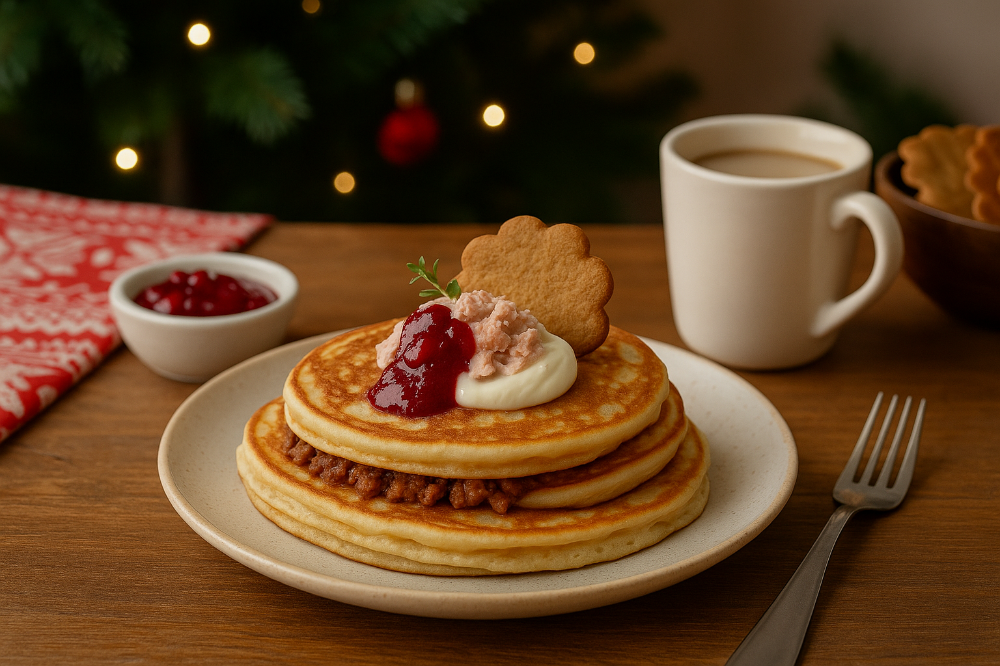
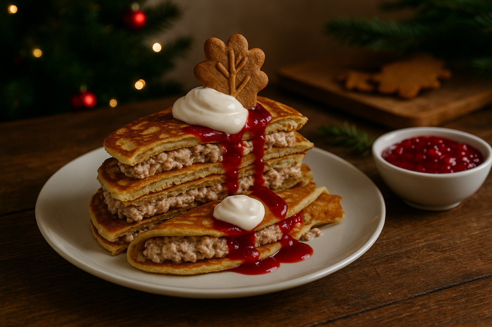

Pepparkaka och tonfisk-pannkakor
En kombination som blandar julens kryddvärme med tonfiskens milda sälta. Resultatet är en märkligt harmonisk kontrast som utmanar smaklökarna och erbjuder en helt ny typ av pannkaksupplevelse.
Ingredienser
- 3 dl vetemjöl
- 6 dl mjölk
- 3 ägg
- 1 msk smör
- 2 msk pepparkakskrydda
- 1 burk tonfisk i vatten (185 g)
- 1 dl creme fraiche
Så här gör du
- Blanda smeten och tillsätt pepparkakskrydda.
- Stek pannkakor.
- Fyll med tonfisk och creme fraiche.
Serveringsförslag
- 
- 